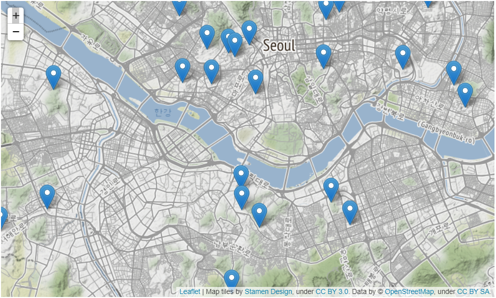
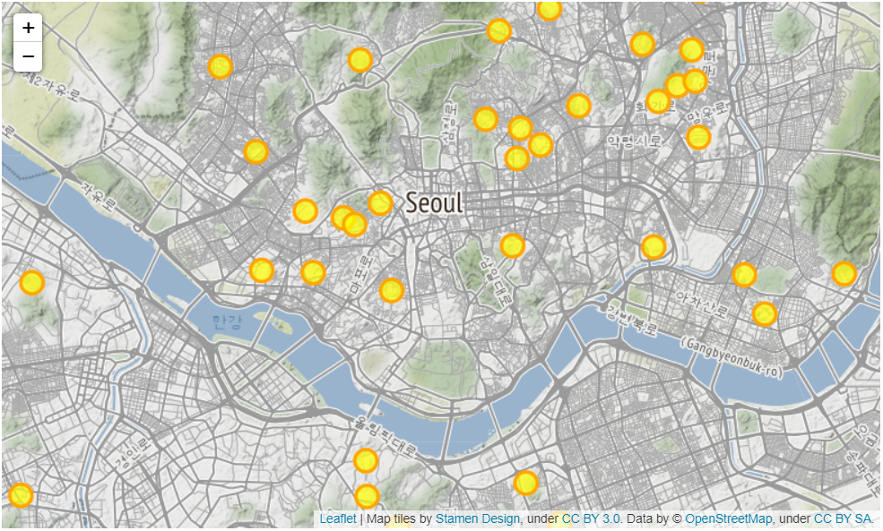
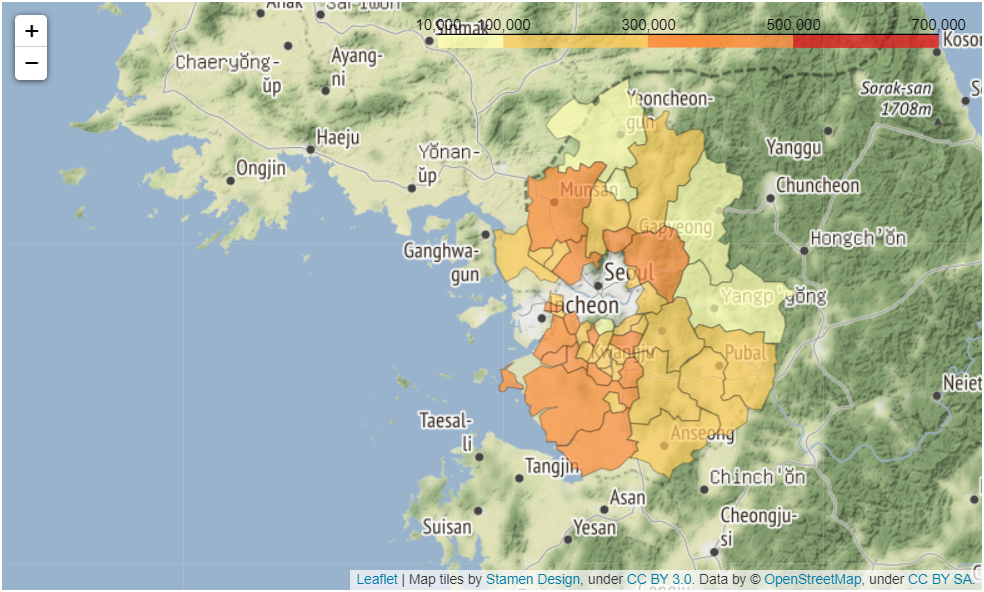

Python 데이터분석 라이브러리(13) - Folium
Data-Science 강의는 여러 절로 구성되어 있습니다.
- Relational Database MySQL(1) - Introduction
- Relational Database MySQL(2) - Install 및 환경설정
- Relational Database MySQL(3) - MySQL 전체 운영 실습
- Relational Database MySQL(4) - Data Modeling
- Relational Database MySQL(5) - MySQL Utility
- Relational Database MySQL(6) - SQL 기본
- Relational Database MySQL(7) - SQL 고급(1)
- Relational Database MySQL(8) - SQL 고급(2)
- Relational Database MySQL(9) - Table & View
- Relational Database MySQL(10) - Index
- Relational Database MySQL(11) - Index 성능비교
- NoSQL Database MongoDB(1) - Introduction
- NoSQL Database MongoDB(2) - NoSQL Data Modeling
- NoSQL Database MongoDB(3) - MongoDB Basic Concept
- Python 데이터분석 라이브러리(0) - Introduction
- Python 데이터분석 라이브러리(1) - NumPy
- Python 데이터분석 라이브러리(2) - NumPy(Exercise)
- Python 데이터분석 라이브러리(3) - Pandas(Series)
- Python 데이터분석 라이브러리(4) - Pandas(DataFrame 생성)
- Python 데이터분석 라이브러리(5) - Pandas(DataFrame indexing)
- Python 데이터분석 라이브러리(6) - Pandas(DataFrame functions)
- Python 데이터분석 라이브러리(7) - Pandas(DataFrame merge)
- Python 데이터분석 라이브러리(8) - Pandas(DataFrame 제어)
- Python 데이터분석 라이브러리(9) - Pandas(DataFrame Grouping)
- Python 데이터분석 라이브러리(10) - Pandas(Exercise)
- Python 데이터분석 라이브러리(11) - matplotlib
- Python 데이터분석을 위한 통계
- Python 데이터분석 라이브러리(12) - seaborn
- Python 데이터분석 라이브러리(13) - folium
데이터 시각화 - Folium
Folium은 library는 데이터를 지도위에 시각화 할 때 유용하게 사용됩니다.
Folium을 사용하기 위해서는 먼저 library를 설치해야 합니다.
conda install -c conda-forge folium
Folium - 지도 생성
Folium library의 Map() 함수를 이용하면 쉽게 지도 객체를 생성할 수 있습니다.
이렇게 만들어진 지도 화면은 고정된게 아니고 줌기능과 화면 이동기능이 함께 제공됩니다.
Folium은 코드의 실행결과로 웹 기반 지도를 만들어주기 때문에 웹 환경에서만 지도를 확인할
수 있다는 점은 주의해야 합니다. 우리는 Jupyter Notebook을 사용하고 있기 때문에 바로
지도 객체를 확인할 수 있습니다. 만들어진 지도 객체에 save() 함수를 이용하면
html 파일로 저장할 수 있습니다.
간단한 코드를 이용해 지도를 확인해 보죠.
import folium
# 서울 지도
# location=[위도, 경도]
seoul_map = folium.Map(location=[37.55,126.98], zoom_start=12)
seoul_map.save('./seoul_geo.html')
seoul_map
Folium - 지도 스타일 적용
Map() 함수에 tiles 속성을 지정하면 지도에 적용하는 스타일을 바꿀 수 있습니다.
아래의 코드로 확인해보도록 하죠
import folium
# 서울 지도
# location=[위도, 경도]
seoul_map = folium.Map(location=[37.55,126.98],
zoom_start=12,
tiles='Stamen Terrain') # tiles='Stamen Toner'
# tiles='Stamen Terrain' : 산악지형등의 지형이 보다 선명하게 보인다.
# tiles='Stamen Toner' : 흑백 스타일로 도로망을 강조해서 볼 수 있다.
seoul_map
Folium - 마커 활용
원하는 곳의 위치데이터를 DataFrame으로 변환한 후 Folium 지도에 위치를 표시할 수 있습니다. Marker를 표시하려면 Marker() 함수에 위도, 경도를 전달하면 됩니다. 추가적으로 popup 속성을 이용하면 마커를 클릭했을 때 정보를 보여주는 팝업창을 만들 수 있습니다.
장소에 대한 위치데이터가 필요하기 때문에 이 데이터는 아래의 파일을 이용해서 불러들이도록 하겠습니다. (대학교 위치정보)
실습 Excel 파일(seoul_university.xlsx)
import pandas as pd
import folium
# index_col : 특정 column을 DataFrame의 index로 설정
df = pd.read_excel('./data/seoul_university.xlsx', index_col=0)
# display(df)
# 서울 지도
seoul_map = folium.Map(location=[37.55, 126.98],
tiles='Stamen Terrain',
zoom_start=12)
# 대학교 위치를 마커로 표시(서울의 모든 대학에 대한 정보가 있는건 아니다.)
for name, lat, lng in zip(df.index, df['위도'], df['경도']):
folium.Marker([lat,lng], popup=name).add_to(seoul_map)
seoul_map

Marker에 대해서 조금만 더 알아보도록 하죠. 원형 마커를 이용할 수 있는데 이때 Marker의 크기, 색상, 투명도 등을 설정할 수 있습니다.
아래의 코드로 살펴보도록 하겠습니다.
import pandas as pd
import folium
# index_col : 특정 column을 DataFrame의 index로 설정
df = pd.read_excel('./data/seoul_university.xlsx', index_col=0)
# 서울 지도
seoul_map = folium.Map(location=[37.55, 126.98],
tiles='Stamen Terrain',
zoom_start=12)
# 대학교 위치를 마커로 표시(서울의 모든 대학에 대한 정보가 있는건 아니다.)
for name, lat, lng in zip(df.index, df['위도'], df['경도']):
folium.CircleMarker([lat,lng],
radius=10, # 원의 반지름
color='orange', # 원의 둘레 색상
fill=True,
fill_color='yellow', # 원을 채우는 색
fill_opacity=0.7, # 투명도
popup=name).add_to(seoul_map)
seoul_map

Folium - 지도 영역에 단계 구분도 표시
지도 상에 어떤 경계에 둘러싸인 영역에 색을 칠하거나 음영 등으로 정보를 나타내는 시각화 방법으로 상당히 많이 이용됩니다. 전달하려는 정보의 값이 커지면 영역에 칠해진 색이나 음영이 진해지게 됩니다.
예제를 위해 두개의 데이터를 사용할 것인데 하나는 인구 변화 데이터(2007~2017)이고 다른 하나는 경기도 행정구역 경계 지리 정보입니다.
실습 Excel 파일(gyeonggi_population.xlsx)
실습 JSON 파일(gyeonggi_boundary.json)
코드로 살펴보죠.
import pandas as pd
import folium
import json
# 경기도 인구 변화 데이터를 불러와서 DataFrame으로 변환
pop_filepath = './data/gyeonggi_population.xlsx'
df = pd.read_excel('./data/gyeonggi_population.xlsx', index_col='구분')
df.columns = df.columns.map(str) # 열 이름을 문자열로 변환
# display(df)
# 경기도 시군구 경계 정보를 가진 geo-json 파일 불러들이기
geo_path = './data/gyeonggi_boundary.json'
geo_data = json.load(open(geo_path, encoding='utf-8'))
# 경기도 지도
g_map = folium.Map(location=[37.5502, 126.982],
tiles='Stamen Terrain',
zoom_start=9)
# g_map
# 출력할 연도 선택
year = '2007'
folium.Choropleth(geo_data=geo_data, # 지도 경계
data=df[year], # 표시하려는 데이터
columns=[df.index, df[year]], # 열지정
fill_color='YlOrRd',
fill_opacity=0.7,
line_opacity=0.3,
threshold_scale=[10000, 100000, 300000, 500000, 700000],
key_on='feature.properties.name').add_to(g_map)
g_map

End.
Data-Science 강좌는 아래의 책과 사이트를 참조했습니다. 조금 더 자세한 사항을 알고 싶으시면 해당 사이트를 방문하세요!!